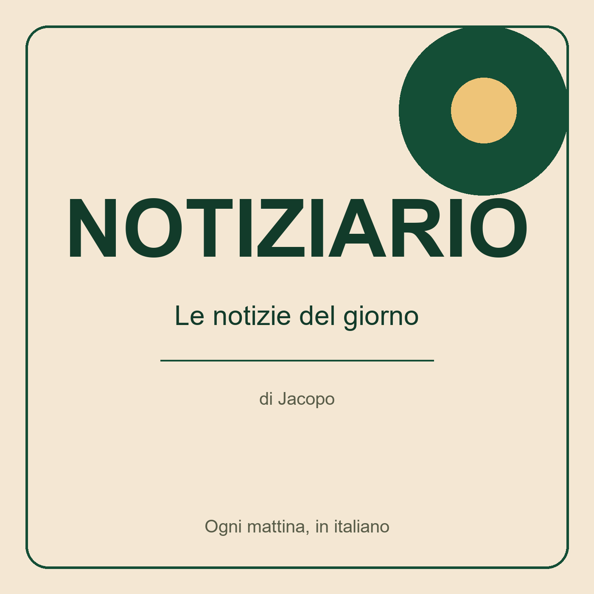

Il notiziario di Jacopo
Le notizie del giorno scelte da Jacopo, lette in italiano. Un riassunto quotidiano delle notizie italiane e internazionali.
Scegli un episodio dalla lista.
Impostazioni
...
Le modifiche si salvano dalla dashboard GitHub e vengono applicate al run successivo.
Modalità AI: caricamento...
Episodi disponibili: caricamento...
Ultimo aggiornamento: caricamento...